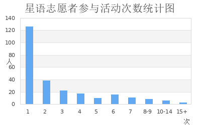
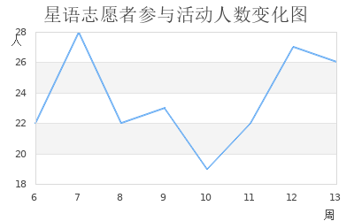
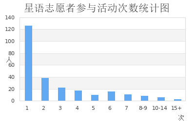
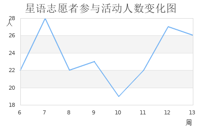

星语数据统计结果
2019/12/2
时间维度
- 2018年秋季学期共210人次，77人参加
- 2018年秋季学期共370人次（含拓展活动），129人参加
- 2019年秋季学期共189人次，72人参加
只有一个人参加的某次常规活动统计
| 时间 | 日期 |
|---|---|
| 周五下午单周 | 2019-04-15 |
| 周一下午 | 2019-05-06 |
| 周一下午 | 2019-05-27 |
| 周二下午金色年华 | 2019-10-21 |
条形图

折线图（2019年秋季学期）

2019/12/2
| 时间 | 日期 |
|---|---|
| 周五下午单周 | 2019-04-15 |
| 周一下午 | 2019-05-06 |
| 周一下午 | 2019-05-27 |
| 周二下午金色年华 | 2019-10-21 |

